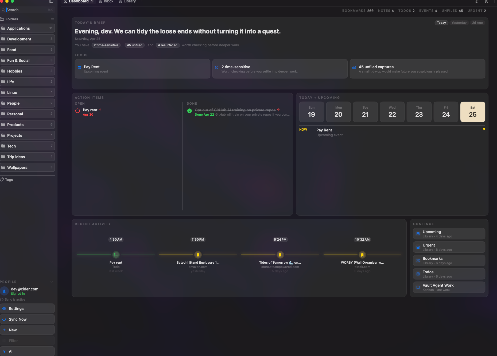
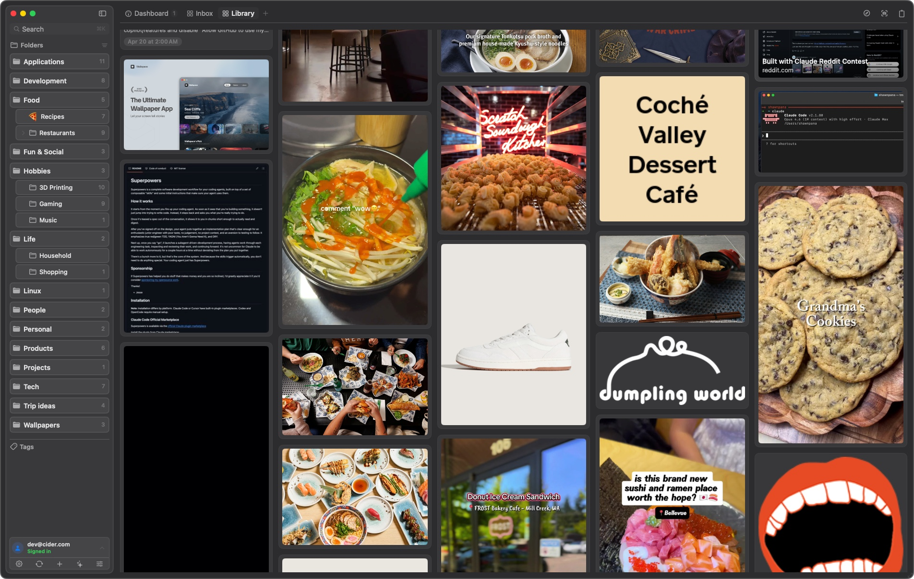
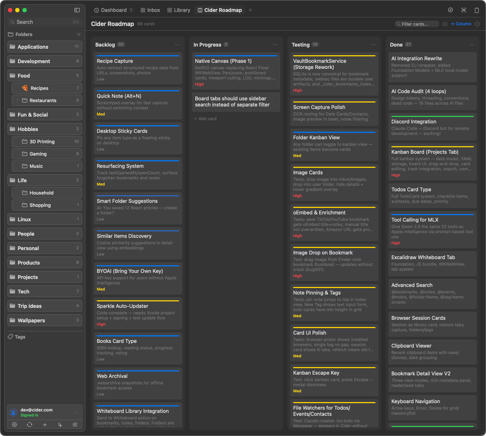

Native macOS capture, organized by your own files
Let everything worth keeping flow back to you.
Cider floats above your Mac, catches links, notes, screenshots, files, dates, and contacts, then turns them into a fast local knowledge vault you actually want to revisit.
Cider
Dashboard
Inbox
Library
200 bookmarks
Evening, dev. Tidy the loose ends.
2 time-sensitive · 45 unfiled · 4 resurfaced
Pay Rent
Time-sensitive
Unfiled captures
1920212225
Pay Rent · Upcoming event
Cinematic product preview. Real screenshots live below for proof.
First-person capture flow
Double-tap Option. The stream opens wherever you are.
The page starts close to the cider current, then pulls back as the product appears: capture from Safari, write a note, drop a file, ask AI, and watch it all settle into your vault.
01
Capture without context switching
Save the active tab, catch copied URLs, drag in images, or turn screenshots into searchable notes.
02
Organize at the speed of thought
Folders, tags, saved views, masonry, lists, and a command palette keep the vault moving.
03
Resurface what matters
Search across notes, bookmarks, date cards, contacts, and files from a panel that stays out of the way.
Your data stays yours
A vault made of real files, backed by SQLite.
Cider does not trap your knowledge in an opaque cloud database. Bookmarks are native
.webloc files, notes are Markdown, folders are Finder folders, and SQLite keeps
rich metadata fast.
~/CiderVault/
Bookmarks/
Design System.webloc
Notes/
Launch Plan.md
Screenshots/
OCR Capture.png
.cider/cider.db
Product moments
Real views, not vapor.



Powerful without feeling heavy
Built like a Mac app, not a web app in a coat.
Native floating panel
Double-tap Option and Cider appears on the screen where you are already working.
Universal library
Bookmarks, notes, files, date cards, contacts, and folders live in one searchable feed.
Fast capture
Save browser tabs, copied URLs, screenshots with OCR, images, and rich notes from anywhere.
Flexible views
Switch between list, grid, masonry, tags, folders, and custom saved tabs.
Spotlight-ready
Index your saved knowledge so the Mac itself can help you find what you captured.
Portable by design
Delete the app tomorrow and your files still make sense in Finder, editors, and AI tools.
Optional intelligence
Ask your vault questions without handing it away.
Use Cider with no AI at all, lean on Apple on-device intelligence, or opt into local models for summaries, tagging, semantic search, and vault chat. Power users can bring any CLI agent because the vault is just files.
No AI required
Apple on-device
Local model
CLI agents
Cider beta
Start building a vault your future self can actually use.
Native Swift. Local-first storage. No subscription. No Electron.
Download Cider Beta Latest release on GitHub